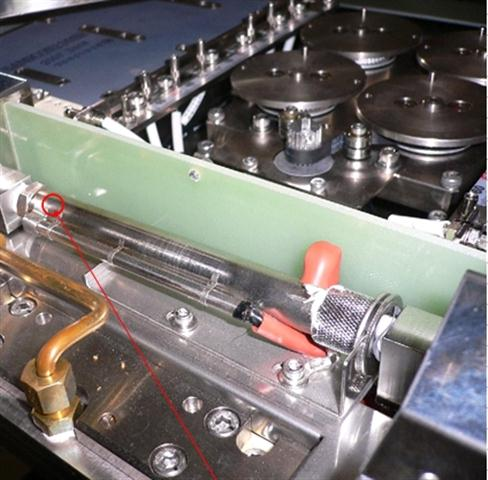

Service History
Subject: NS-8080 JetHeater (Socket Air Blower) evaluation
Handler Model: NS-8080
Controller: RC520
Date: 9 Jan 2009
Symptom
Action
Installation of Instant Heater for Socket Air 2.
After installation, Operational check on 50 deg and 90 deg, and found something peculiar. (Currently, all setting is at factory default, no blockage in the docking plate and socket heater 'on') When HMI set at 90 deg, Socket Air 2 will rise to 110 deg (on the HMI screen) before stablilising at 90 deg. When set at 50 deg, it will rise to 60 deg before stabilising at 50 deg. Socket Air 1 only increase to +5 deg of the set temperature.
Temperature calibration carried out for 50 deg and reading taken at 15 min and 30 min interval.
12~13 Jan 2009 NS8080 evaluation, Jet heater Static Calibration
Static Temperature calibration carried out for 90 deg and 130 deg.
Findings / happenings during the calibration:-
- 2 thermal couples were changed due to peculiar behavior (e.g., set at 130 deg, temperature was 140 deg and set at 90 deg, temperature was 97 deg), verification checks were carried out for both 90 deg and 130 deg.
- no doubt SCS claimed that their thermal couples were calibrated, some thermal couples had been swapped to verify socket air problem or thermal couples' problem, conclusion thermal couple problem
- SA 1, SA 2, Socket and Chamber offset had been used to fine tune the temperature.
- test arm was also plunged up and down a few times to verify some doubts during the calibration.
- temperature tolerance was able to obtain +/- 2 deg for both 90 deg and 130 deg.
- temperature tolerance was even better for 50 deg, only +/- 0.5 deg.
14~16 Jan 2009 NS8080 evaluation, Jet heater RTD Static and Dynamic calibration
a) Assist SCS Engineer to set-up data logger for doing static RTD verification. Static RTD verification carried out on 50 deg. Static RTD verification was within specification but dynamic run failed. Index arm 2 found with high temp during initial plunge and 10 deg deviation after 60 sec test time. Problem it due to high temp at shuttle 2, therefore shuttle 2 was re-calibrated on 50 deg, 90 deg and 130 deg. After re-calibration of 50 deg, dynamic run was carried out and found satisfactory.
b) Dynamic run on 50 deg was verified by SCS engineer with passed result. Verification on 90 deg static RTD found satisfactory but dynamic run failed. Continue with verification on 130 deg static RTD found satisfactory but dynamic run failed. Both 90 deg and 130 deg dynamic run found that the index arm 1 was within temp and index arm 2 has high temp. But after 60 sec test time, the temp was out of specification (low side). When selecting Temperature Priority mode, the shuttle was inside the chamber that night be the cause for high temp at index arm 2 during initial plunge.
c) Various of methods were done by adjusting the offset on shuttle 1, shuttle 2, socket heater, socket air 1 and socket air 2 for 90 deg. After adjusting the every individual offset, dynamic run was carried out to verified the temp. Dynamic run on 90 deg awaiting for SCS engineer to verify.
Cause
Remarks
Refer email on 26 Apr 2013 on NS8080 Jet Heater (socket blower) installation procedure.
This is related to 0056-NS8K
13 Jan 2009 email from Hidaka (Subject: NS-8000 Jet Heater Overshoot)
Regarding for Jet heater overshoot, 20 degree is no problem during 90 degree setting.
15 Jan 2009 email from Hidaka (Subject: NS-8080 Hot temperature adjustment)
Just I talk to engineer about hot temperature adjustment.
Condition
- Arm 1 is within tolerance value
- Arm2 is out of tolerance value( actual value is lower than tolerance value)
Idea
1. Set more high offset for Shuttle 2
For example: Set temp 90 degree
Arm2 temp is 82 degree
Shuttle offset is up to +8 degree.
2. Wait 30 min after reached set temperature
(If you can do dummy running after reached set temperature,
It will be waiting for 20 min.)
16 Jan 2009 email from Hidaka (Subject: RE: NS-8080 Hot temperature adjustment)
Jet Heater offset value limit:
Less than 70 degree
Exact limitation: Less than 200 degree for Jet heater surface.
The temperature is measured by surface temperature meter.
How to adjust the offset temperature?
Socket heater is more priority than Jet heater.
It seems to our engineer that the offset value is too low.
Our engineer request
1. Shuttle temperature offset data
2. Temperature monitor graph (captured from HMI display)

Surface temperature monitor touch the point
Then you adjust the offset while check the jet heater surface temperature
(Outside of High temperature counter air)
19 Jan Weekly Technical Meeting
NS-8080 evaluation temperature fluctuation - Stabilization plate installed but Temperature fluctuation still occurs. Under monitoring. (Refer to EEMS same issue)
To source and try out aluminum tape to tape around sensor due to sensor too sensitive to temperature change.
19 Jan 2009 NS8080 evaluation, Jet heater RTD Static and Dynamic calibration
Verification on 90 deg static RTD failed . Verification on 90 deg dynamic run found within specification but SCS engineer doesn't feel comfortable due to various offset on different locations were adjusted. Data collection on 90 deg static and dynamic before and after offset adjustment required by SCS engineer. Data collection on 130 deg on static and dynamic before offset adjustment carried out. Tuning on 130 deg for dynamic run.
20~21 Jan 2009 NS8080 evaluation, Jet heater RTD Static and Dynamic calibration
130 deg calibration using RTD. During calibration found out that sites A, B and G cannot contain heat well, this may be due to the structure of the handler as these 3 points are most subjective to exterior air turbulence. Socket Air 1 (SA1) and 2 (SA1) do help in containing the heat for these sites, but the best way will be to think of a way to shield off any oncoming air. After increasing SA1, sites A and B condition improved. Situation for site G was also better after increasing SA2. But during calibration, found out that instant heater for SA1 is failing as the graph on HMI shows that SA1 is very inconsistent and it take a longer time to response (sluggish).
23 Feb 2009 NS8080 Temperature Fluctuation
Simulation of the temperature fluctuation with and without the aluminum tape carried out without any fluctuation.